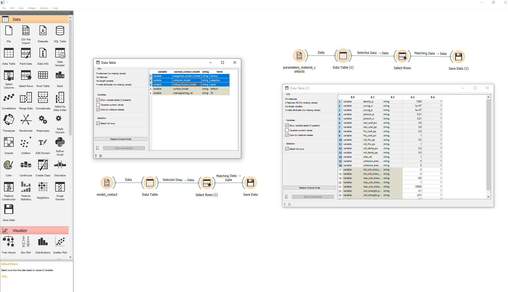

Preparing Input for Calibration
Contents
5.1. Preparing Input for Calibration#
5.1.1. Use-case description#
Sub-System: LIGGGHTS (or Aspherix) - (distributed by DCS Computing GmbH)
This use case describes how to prepare initial input for each calibration workflow.
Section |
Comment |
|---|---|
Use Case Name |
Preparing input for each calibration workflow |
Scope |
Preparation of all required input file to run a calibration case using Aspherix calibration tool |
Level |
High-level calibration data submission |
Primary Actor |
Researchers who wants to calibrate a DEM model, or analyse data of DEM simulations (A PhD or Master student who has done DEM Simulations before) |
Stakeholders and Interests |
Researchers who perform DEM simulations or develop DEM models, experimentalists who conduct tests for calibration of DEM models |
Preconditions |
The user has already retrieved data that are required for calibration from the database (one or more experimental data set or correlation data, assuming all data that has been recorded is available -physical properties-). |
Success Guarantee |
All the input parameters required for the calibration are input to the files and are functional. |
Main Success Scenario |
The user will search in the available templates. The user has copied the template file structure for the calibration. The retrieved data is input in the file structure for the calibration. The user modifies the .casx file required for Aspherix calibration. |
file Extensions |
|
Special Requirements |
none |
Technology and Data Variations List |
|
Frequency of Occurrence |
upon request in each calibration step |
Miscellaneous |
It should be functional for at least two sets of experiments. |
5.1.2. Workflow#
This use-case can be specific to the calibration-method and the required input data-types the chosen calibration templates. Here we are using the Aspherix-5.2.1 calibration tool. The user cam employ the pre-defined templates in the Aspherix Calibration package to carry out the workflows. Each calibration workflow is called “calibration template”. And as for any DEM simulation, the required input files should be gathered.
One can find more details on the Aspherix Documentation files, but here is a brief description of the required input scripts:
Calibration setup: aspherix-calibration.casx
measurements: a directory containing text files with the measured quantities from experiment
settings: a directory with text files with the required simulation settings:
parameters_numerical.txt (every information that is needed to run the simulation, like the the number processors, number of iterations, number of chunks in cluster mode running, etc.)
parameters_material_contacts.txt (all the per-particle and per-contact properties should be initialized in this file)
model_contact.txt (based on the contact model that is chosen for the simulation, all the model parameters should be initialized and suitable settings being selected in this file)
parameters_particle_sizes.txt (the particles sizes and information related to their distribution)
parameters_tests.txt (any experiment-specific parameter e.g. shear rate, drum rotation speed, normal stress during pre-shearing, etc.)
Note: (all input data should be provided as CSV-like data files)
Since all the above files are prepared in .csv format, they can all be visualized and inspected within the Orange3 environment with the “CSV File Import” widget.
